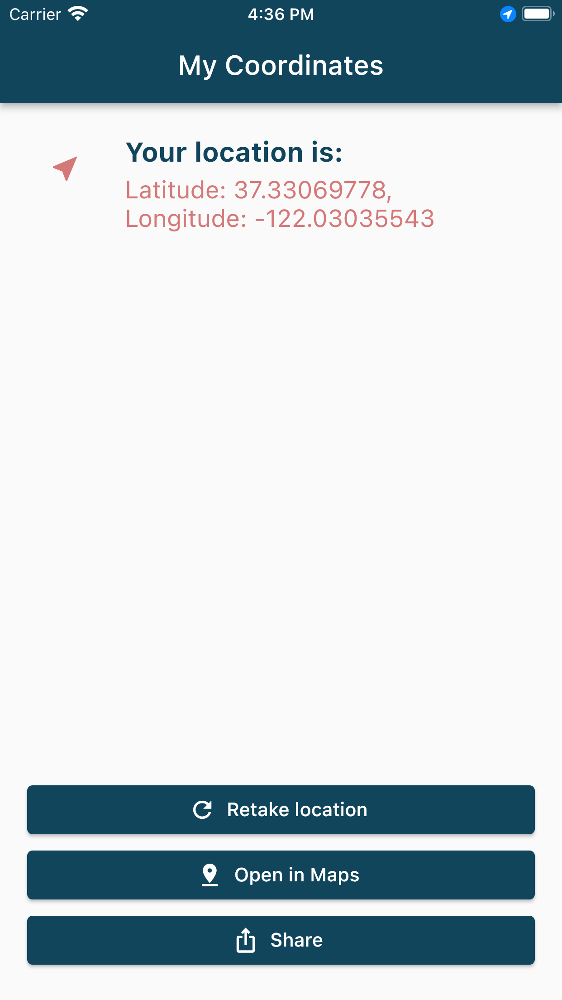

Use Case
Built for urgency and simplicity.
When you need to send your location quickly, the app keeps the flow direct and understandable so users can act immediately.
Coords
Coords is a lightweight utility app for quickly sending your current location to family or friends without unnecessary steps.

Use Case
When you need to send your location quickly, the app keeps the flow direct and understandable so users can act immediately.
Principle
Coords emphasizes speed, familiar interactions, and clear outcomes instead of feature overload.